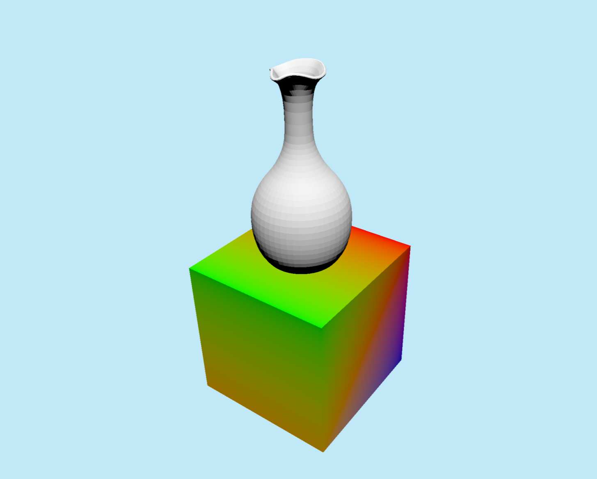
The objective of this project is to develop a real-time 3D rendering environment using the Vulkan graphics API, with a primary focus on implementing dynamic lighting through point lights.
The goal is to try to remake the visual result shown in the following reference scene created in Unity. This reference serves as a target for both visual quality and feature completeness, guiding the technical decisions made throughout the project:
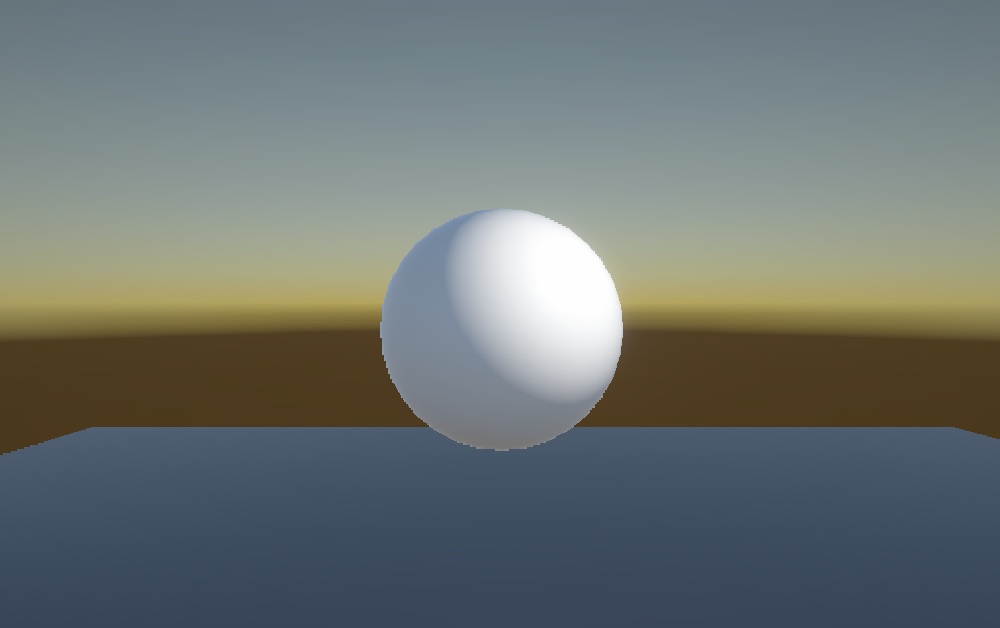
Vulkan is a modern, low-level graphics API that provides explicit control over GPU operations. Unlike higher-level APIs such as OpenGL, Vulkan is hella more difficult as it requires manual management of memory, synchronization and command submission. While this increases complexity, it also offers significantly more control and potentially very big performance benefits.
My primary motivation for choosing Vulkan is to gain a deeper understanding and becoming better in low-level graphics programming. Additionally, this project serves as an opportunity to improve my competency in C++, a language I am not yet fully comfortable with but want to master further.
Another reason for selecting Vulkan is its growing relevance within the industry. Vulkan is designed with modern hardware in mind and is widely considered a futureproof API due to its performance focused design and cross platform support (Windows, Mac and Linux).
(Silicon Studio, 2016)
Even Minecraft is planning on changing their 15 year old OpenGL based engine to be based on Vulkan instead (Minecraft, 2026). The potential performance and scalability benefits are becoming harder for big companies to ignore, making it worth the time to invest in learning this tech:
Here are some comparison videos:
It is important to note, while Vulkan offers higher performance potential, incorrect usage can result in even worse performance due to its really complex nature.
To recreate the Unity reference scene, I defined the following requirements using the MoSCoW prioritization method:
If I have the time, I'd like to implement the following features as well:
Vulkan cannot operate independently. It requires several supporting libraries to handle windowing, input and math operations.
The recommended development environment is C++17 or later (Vulkan Tutorial, n.d.), with a compiler that supports Vulkan, such as MSVC (Microsoft Visual C++) on Windows or Clang/GCC on Linux. And to even use the Vulkan API itself, I had to add the Vulkan SDK to my system's PATH so the project can locate its headers and libraries.
Although many Vulkan projects use CMake to build the project, this project uses Visual Studio/MSBuild tasks for simplicity. I made a tasks.json configuration to build the project (ctrl + shift + B), and I made a launch.json configuration to run the built executable (F5). I did it this way so my project requires one less dependency (CMake).
I made it interactive! Try moving around by grabbing the blue canvas. Hover over the classes to understand their purpose.
main() as the entry point of the program. This is usually where the execution starts.
My main.cpp file contains this main function, creating an instance of the Editor class and calling its run() method which contains the main loop of the application.
int main() {
Enginator::Editor editor{};
try {
editor.run();
} catch (const std::exception &e) {
return EXIT_FAILURE;
}
return EXIT_SUCCESS;
}
In c++, classes are defined by a header file (with the .hpp or .h extension) and implemented in a source file (with the .cpp extension). A header file works similar to a C# interface or abstract class, where the fields and member functions are declared:
class Editor {
public:
static constexpr int WIDTH = 1200;
static constexpr int HEIGHT = 800;
Editor(); // Constructor
~Editor(); // Destructor, called when the object is destroyed, used for cleaning up resources
void run();
private:
void loadGameObjects();
EnginatorWindow enginatorWindow{WIDTH, HEIGHT, "vulkan is hard"};
EnginatorDevice enginatorDevice{enginatorWindow};
EnginatorRenderer enginatorRenderer{enginatorWindow, enginatorDevice};
// Order of declarations matter. Pool needs to be destroyed before device
std::unique_ptr globalPool{};
EnginatorGameObject::Map gameObjects;
};
The editor has an instance of an EnginatorWindow, which manages an instance of a GLFWwindow and its events.
void Editor::run() {
while (!glfwWindowShouldClose(enginatorWindow.window())) {
glfwPollEvents();
// This is basically the main loop of the application where the render system and update loops will be located
}
}
The Editor class is not only responsible for the window, but also for holding and managing the renderer, which acts as a coordinator of the entire graphics pipeline.
A graphics pipeline is a sequence of steps that transforms 3D model data (vertices) into a 2D image (pixels) on a screen (Meta, 2026).
Vulkan's graphics pipeline consists of the following stages:
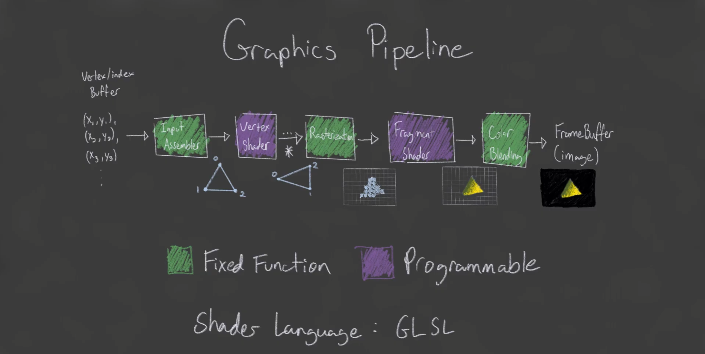
(Brendan Galea (1), 2020)
Basically:
There are more stages, like the Tessellation or Geometry shaders stages but those are pretty advanced and not really relevant inside of my scope.
The EnginatorRenderer acts as the coordinator of the rendering process. It does not execute pipeline stages itself, but controls when and how the GPU runs them by recording commands (e.g., draw these specific vertices or bind these textures) into "command buffers", which is information that will run through the pipeline.
At the start of each frame, which is when the Editor calls the renderer's beginFrame() method, an available image is acquired from the "swap chain". This image (the "render target") will eventually be drawn on the screen near the end of the frame, but before being displayed we need to tell the GPU how to render the scene on to that image.
auto result = enginatorSwapChain->acquireNextImage(¤tImageIndex);
vkBeginCommandBuffer(commandBuffer, &beginInfo);
The benefit of using a swap chain (as opposed to just rendering directly to the screen) is that it allows for double or triple buffering, which is when multiple images are used to store upcoming frames. This can improve performance (because the GPU can already start working on one frame while the display is showing another) and reduce "visual artifacts" (like screen tearing or flickering). Instead of rendering directly to the screen, frames are rendered to these images and presented in sequence. This makes sure that only fully rendered frames are displayed.
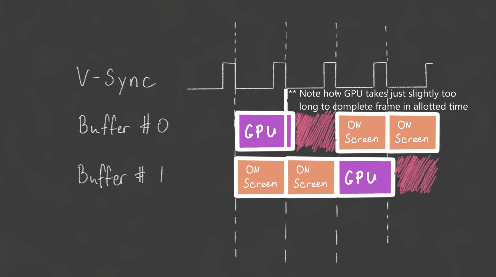
Without multiple buffers, the GPU often has to wait for the display to finish before rendering the next frame (Brendan Galea (2), 2020)
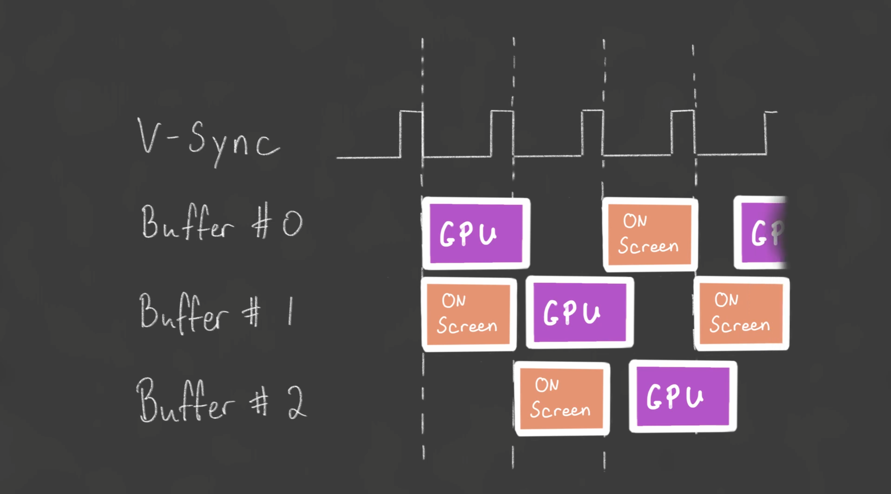
In this case, triple buffering is always providing the GPU with a frame to work on:(Brendan Galea (2), 2020)
Next, a render pass (a collection of operations that demand the GPU how it should render the scene, like clearing the color or depth buffer or setting the viewport) is started. This step defines which framebuffer (the swap chain image) will be used and prepares the pipeline for drawing.
vkCmdBeginRenderPass(commandBuffer, &renderPassInfo,
VK_SUBPASS_CONTENTS_INLINE);
vkCmdSetViewport(commandBuffer, 0, 1, &viewport);
vkCmdSetScissor(commandBuffer, 0, 1, &scissor);
During this render pass, draw commands are recorded. These commands will later trigger execution of the vertex and fragment stages on the GPU.
After recording, endFrame() is called which submits the command buffer to the GPU and presents the final image to the screen:
vkEndCommandBuffer(commandBuffer);
enginatorSwapChain->submitCommandBuffers(&commandBuffer, ¤tImageIndex);
If the window is resized, the swap chain must be recreated to match the new window sizes. The code would otherwise crash because the swap chain images would no longer match the window dimensions.
if (result == VK_ERROR_OUT_OF_DATE_KHR || result == VK_SUBOPTIMAL_KHR || enginatorWindow.wasWindowResized()) {
enginatorWindow.resetWindowResizedFlag();
recreateSwapChain();
}
The SimpleRenderSystem class is responsible for recording the actual draw commands that will be executed by the GPU. It defines how game objects are rendered, including which shaders to use, how to bind vertex data and how to pass transformation and lighting data to the GPU.
class SimpleRenderSystem {
public:
SimpleRenderSystem(EnginatorDevice &enginatorDevice, VkRenderPass renderPass,
VkDescriptorSetLayout globalSetLayout);
~SimpleRenderSystem();
void renderGameObjects(FrameInfo &frameInfo);
private:
void createPipelineLayout(VkDescriptorSetLayout globalSetLayout);
void createPipeline(VkRenderPass renderPass);
EnginatorDevice &enginatorDevice;
std::unique_ptr enginatorPipeline;
VkPipelineLayout pipelineLayout;
};
The render system creates a pipeline object while passing a vertex and fragment shader:
enginatorPipeline = std::make_unique(
enginatorDevice, "shaders/triangle.vert.spv", "shaders/triangle.frag.spv",
pipelineConfig);
Shaders are written in GLSL, but have to be compiled to SPIR-V before Vulkan can use them (the .spv extension). SPIR-V is a binary intermediate language for shaders, designed to be more efficient for the GPU to execute.
This EnginatorPipeline class passes the shader code to the Vulkan API to create shader modules, which will be used in the future when draw commands are executed.
auto vertCode = readFile(vertFilepath);
auto fragCode = readFile(fragFilepath);
createShaderModule(vertCode, &vertShaderModule);
createShaderModule(fragCode, &fragShaderModule);
void EnginatorPipeline::createShaderModule(const std::vector &code,
VkShaderModule *shaderModule) {
VkShaderModuleCreateInfo createInfo{};
createInfo.sType = VK_STRUCTURE_TYPE_SHADER_MODULE_CREATE_INFO;
createInfo.codeSize = code.size();
createInfo.pCode = reinterpret_cast(code.data());
if (vkCreateShaderModule(device.device(), &createInfo, nullptr,
shaderModule) != VK_SUCCESS) {
throw std::runtime_error("failed to create shader module!");
}
}
The vertex shader is responsible for transforming the vertices from model space to clip space, and passing any necessary data to the fragment shader. In this example, the vertex shader takes in vertex positions and colors, applies a transformation to the positions, and passes the colors to the fragment shader.
#version 450
layout(location = 0) in vec3 position;
layout(location = 1) in vec3 color;
layout(location = 0) out vec3 fragColor;
void main() {
gl_Position = vec4(position, 1.0);
fragColor = color;
}
#version 450
layout (location = 0) in vec3 fragColor;
layout (location = 0) out vec4 outColor;
void main() {
outColor = vec4(fragColor, 1.0);
}
Shaders are written in GLSL which have to be compiled to SPIR-V before Vulkan can use them. SPIR-V is a binary intermediate language for shaders, designed to be more efficient for the GPU to execute.
When the renderGameObjects() method is called, the command buffer (that was previously made by the renderer) is passed to the GPU with instructions on how to render the game objects.
void SimpleRenderSystem::renderGameObjects(FrameInfo &frameInfo) {
enginatorPipeline->bind(frameInfo.commandBuffer);
vkCmdBindDescriptorSets(frameInfo.commandBuffer,
VK_PIPELINE_BIND_POINT_GRAPHICS, pipelineLayout, 0, 1,
&frameInfo.globalDescriptorSet, 0, nullptr);
for (auto &keyValue : frameInfo.gameObjects) {
// Every game object simply has a model (which contains the vertex and index buffers) and a transform (which contains the position, rotation and scale of the object).
// The render system iterates through all game objects and renders them one by one.
auto &gameObject = keyValue.second;
if (gameObject.model == nullptr)
continue;
SimplePushConstantData push{};
push.modelMatrix = gameObject.transform.mat4();
push.normalMatrix = gameObject.transform.normalMatrix();
// For each game object, transformation data is passed to the GPU using "push constants":
vkCmdPushConstants(frameInfo.commandBuffer, pipelineLayout,
VK_SHADER_STAGE_VERTEX_BIT |
VK_SHADER_STAGE_FRAGMENT_BIT,
0, sizeof(SimplePushConstantData), &push);
// These push constants are a small amount of data that can be passed directly to the shaders without the need for a buffer. They are really great for frequently changing data, such as transformation matrices, that need to be updated for each draw call.
gameObject.model->bind(frameInfo.commandBuffer);
gameObject.model->draw(frameInfo.commandBuffer);
}
The bind() method is called to bind the model's vertex and index buffers to the command buffer:
void EnginatorModel::bind(VkCommandBuffer commandBuffer) {
VkBuffer buffers[] = {vertexBuffer->getBuffer()};
VkDeviceSize offsets[] = {0};
vkCmdBindVertexBuffers(commandBuffer, 0, 1, buffers, offsets);
if (hasIndexBuffer) {
vkCmdBindIndexBuffer(
commandBuffer, indexBuffer->getBuffer(), 0,
VK_INDEX_TYPE_UINT32); // TODO this should porbably be 16 bit on small models
}
}
The draw() method is called to execute the final drawing commands using its vertex and index buffers:
void EnginatorModel::draw(VkCommandBuffer commandBuffer) {
if (hasIndexBuffer) {
vkCmdDrawIndexed(commandBuffer, indexCount, 1, 0, 0, 0);
} else {
vkCmdDraw(commandBuffer, vertexCount, 1, 0, 0);
}
}
When vkCmdDraw() or vkCmdDrawIndexed() is called with the correct information, we will finally be able to see something drawn on the screen.
All the ingredients are basically ready for use. I can create the first triangle by instantiating a game object in the Editor class with the following data:
std::vector triangleVertices{
{{-1.0f, 0.0f, 0.0f}, {1.0f, 0.0f, 0.0f}, {}, {}},
{{0.0f, -1.0f, 0.0f}, {1.0f, 0.0f, 0.0f}, {}, {}},
{{1.0f, 0.0f, 0.0f}, {1.0f, 0.0f, 1.0f}, {}, {}},
};
std::vector triangleIndices{0, 1, 2};
auto triangleModel = std::make_shared(enginatorDevice, triangleVertices, triangleIndices);
auto triangleObject = EnginatorGameObject::createGameObject();
triangleObject.model = triangleModel;
gameObjects.emplace(triangleObject.getId(), std::move(triangleObject));
Which renders the following image:
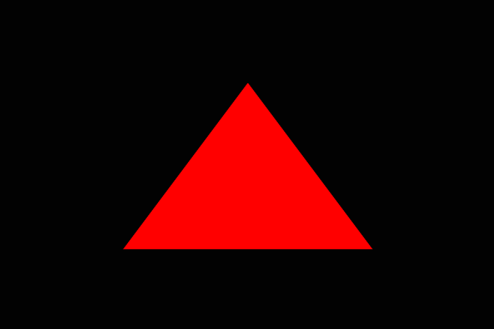
First rendered triangle
This confirms that I was succesful in setting up the basic rendering pipeline. Getting through this part feels really good because every change from now on will be visually verifiable.
Barycentric coordinates are a way to represent a point inside a triangle as a weighted average of the triangle's vertices colors.
This can easily be done in the fragment shader by setting outColor to the interpolated fragment color:
#version 450
layout (location = 0) in vec3 fragColor;
layout (location = 0) out vec4 outColor;
void main() {
outColor = vec4(fragColor, 1.0);
}
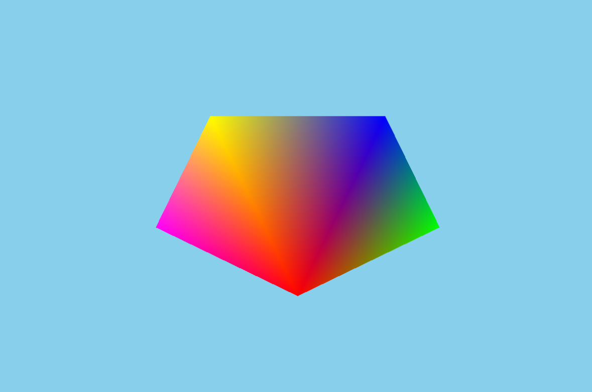
gameObject.transform.rotation.y += 0.01f;
gameObject.transform.rotation.x += 0.005f;
I decided to use tinyobjloader to load .obj (WaveFront) files, which is a simple header only library for loading .obj models. It supports loading vertex data, index data, colors, UVs and normals.
I only want to try and load the vertex and index data for now. All I have to do is extract it from an .obj file and put it in the model's vertex and index buffers.
I created the following method in the EnginatorModel class:
void EnginatorModel::Builder::loadModel(const std::string &filepath) {
tinyobj::attrib_t attrib;
std::vector shapes;
std::vector materials;
std::string warn, err;
if (!tinyobj::LoadObj(&attrib, &shapes, &materials, &warn, &err,
filepath.c_str())) {
throw std::runtime_error(warn + err);
}
vertices.clear();
indices.clear();
std::unordered_map uniqueVertices{};
for (const auto &shape : shapes) {
for (const auto &index : shape.mesh.indices) {
Vertex vertex{};
if (index.vertex_index >= 0) {
vertex.position = {attrib.vertices[3 * index.vertex_index + 0],
attrib.vertices[3 * index.vertex_index + 1],
attrib.vertices[3 * index.vertex_index + 2]};
if (!attrib.colors.empty()) {
vertex.color = {attrib.colors[3 * index.vertex_index + 0],
attrib.colors[3 * index.vertex_index + 1],
attrib.colors[3 * index.vertex_index + 2]};
} else {
vertex.color = {1.0f, 1.0f, 1.0f}; // fallback
}
}
// tinyobjloader can return duplicate vertices, so using an unordered map to only store unique vertices and their corresponding indices.
if (uniqueVertices.count(vertex) == 0) {
uniqueVertices[vertex] = static_cast(vertices.size());
vertices.push_back(vertex);
}
indices.push_back(uniqueVertices[vertex]);
}
}
}
I am now able to create models from .obj files like this:
std::shared_ptr cubeModel =
EnginatorModel::createModelFromFile(enginatorDevice,
"models/colored_cube.obj");
auto gameObject = EnginatorGameObject::createGameObject();
gameObject.model = cubeModel;
gameObject.transform.translation = {0.f, 0.f, 2.5f};
gameObject.transform.scale = {0.5f, 0.5f, 0.5f};
gameObjects.emplace(gameObject.getId(), std::move(gameObject));
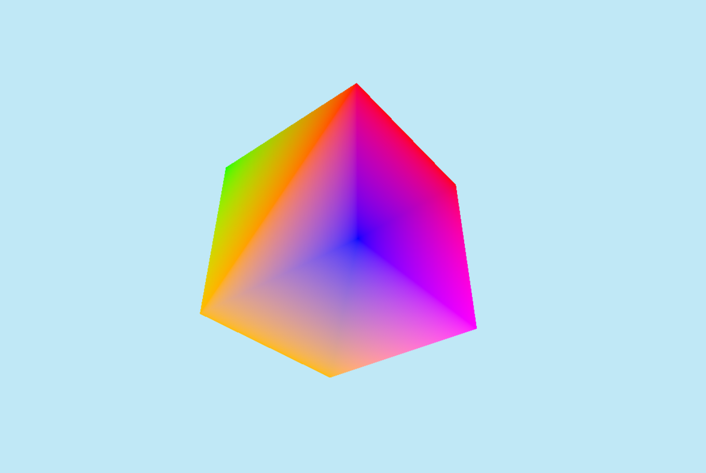
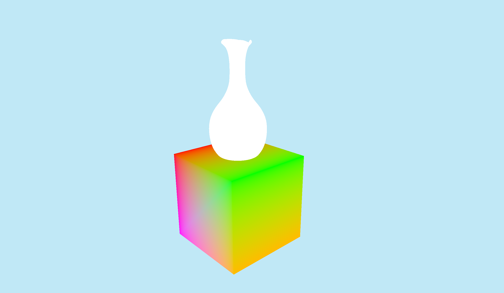
Uniform buffers (UBOs) contain data that remains constant for many vertices or fragments, such as transformation matrices, camera parameters or lighting information. These can be used to reduce draw calls.
Directional light 1 direction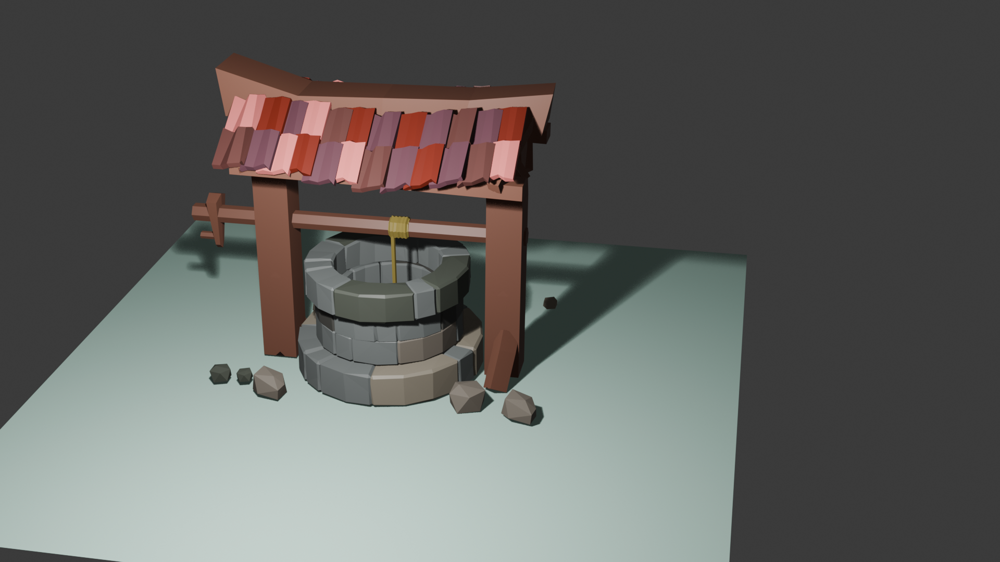
(This is in Blender)
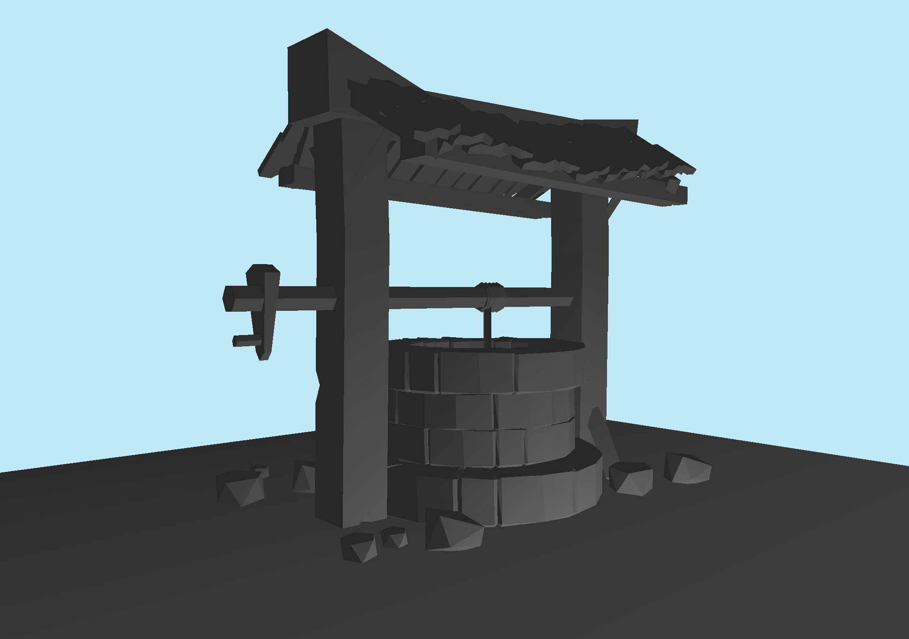
(This is in Blender)
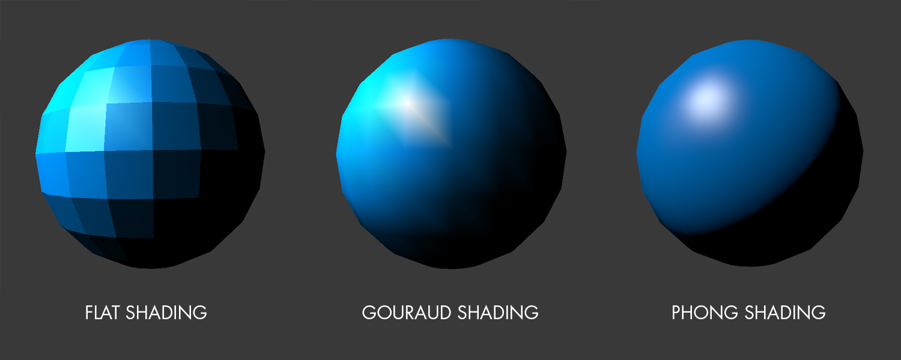
This project provided valuable insights into low-level graphics programming. Working with Vulkan significantly improved understanding of GPU pipelines, memory management, and rendering systems.
Additionally, the project strengthened C++ knowledge, including pointers, destructors, and header file structures.
Reflection on development Comparison with MoSCoW I have a bunch of TODO:s put eveyrwhere in the code What i would do differently if i were to start over after this project, i will continue trying to make shadows, raytrace lighting, textured models and materials challenges:Unlike OpenGL, Vulkan does not execute commands immediately. Instead, commands are recorded into command buffers and submitted to GPU queues.
👉 You don’t bind buffers/images directly to the pipeline 👉 You bind a descriptor set that contains them
Instead of this (OpenGL style): bind buffer A bind texture B bind buffer C draw Vulkan does: bind descriptor set (A + B + C together) draw
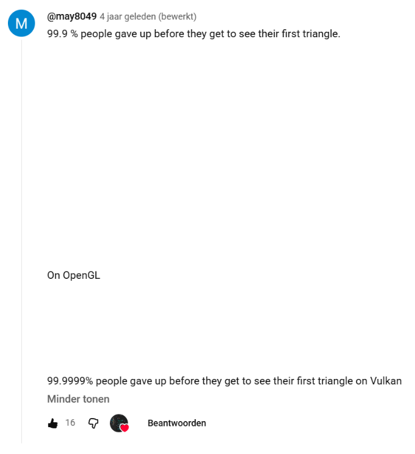